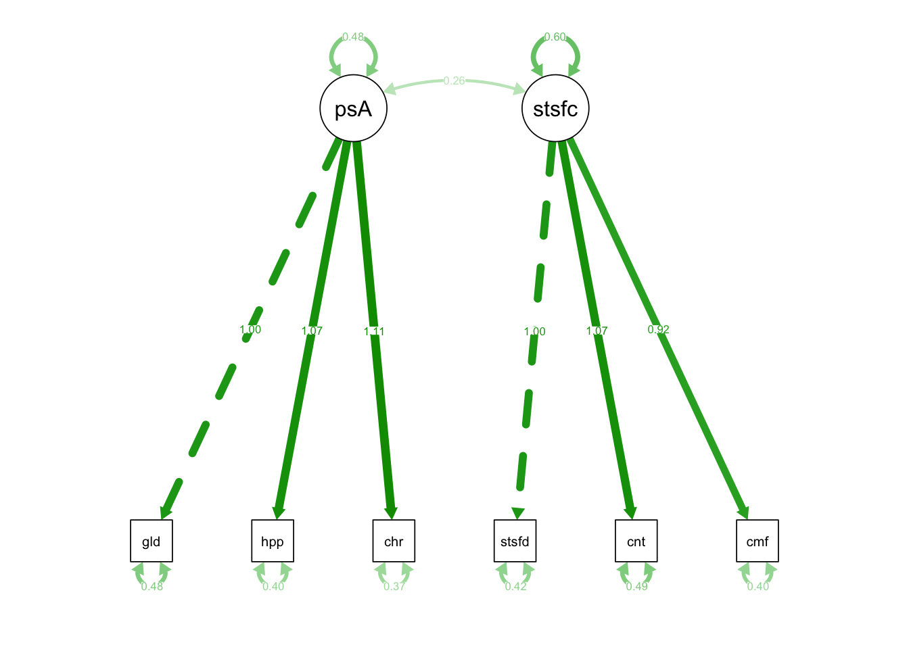

Chapter 9 Week8_1: Lavaan Lab 6 Two-factor CFA Model
9.1 Data Prep
We will continue to use cfaInClassData.csv in this lab.
Let’s read this dataset in:
cfaData<- read.csv("cfaInclassData.csv", header = T)Load up the lavaan library and run some CFA’s!
library(lavaan)9.2 PART I: Two-Factor CFA, Fixed Loading
9.2.1 Fixed Loading, AKA Marker Variable method.
Let’s write up the model syntax for the measurement model with two factors:
fixedIndTwoFacSyntax <- "
#Factor Specification
posAffect =~ glad + happy + cheerful
satisfaction =~ satisfied + content + comfortable
"Here we named the fitted object ‘fixedIndTwoFacRun’ to see our output:
fixedIndTwoFacRun = lavaan::sem(model = fixedIndTwoFacSyntax, data = cfaData, fixed.x=FALSE)Get a summary using summary() function, add standardized=T to request standardized parameter estimates:
summary(fixedIndTwoFacRun, standardized=T)## lavaan 0.6-12 ended normally after 24 iterations
##
## Estimator ML
## Optimization method NLMINB
## Number of model parameters 13
##
## Number of observations 1000
##
## Model Test User Model:
##
## Test statistic 2.957
## Degrees of freedom 8
## P-value (Chi-square) 0.937
##
## Parameter Estimates:
##
## Standard errors Standard
## Information Expected
## Information saturated (h1) model Structured
##
## Latent Variables:
## Estimate Std.Err z-value P(>|z|) Std.lv Std.all
## posAffect =~
## glad 1.000 0.694 0.706
## happy 1.067 0.055 19.294 0.000 0.740 0.758
## cheerful 1.112 0.057 19.458 0.000 0.772 0.785
## satisfaction =~
## satisfied 1.000 0.773 0.767
## content 1.068 0.052 20.525 0.000 0.826 0.762
## comfortable 0.918 0.045 20.336 0.000 0.709 0.746
##
## Covariances:
## Estimate Std.Err z-value P(>|z|) Std.lv Std.all
## posAffect ~~
## satisfaction 0.262 0.025 10.284 0.000 0.488 0.488
##
## Variances:
## Estimate Std.Err z-value P(>|z|) Std.lv Std.all
## .glad 0.484 0.029 16.647 0.000 0.484 0.501
## .happy 0.405 0.028 14.389 0.000 0.405 0.425
## .cheerful 0.371 0.029 13.004 0.000 0.371 0.384
## .satisfied 0.419 0.029 14.326 0.000 0.419 0.412
## .content 0.491 0.034 14.542 0.000 0.491 0.419
## .comfortable 0.400 0.026 15.315 0.000 0.400 0.443
## posAffect 0.482 0.042 11.439 0.000 1.000 1.000
## satisfaction 0.597 0.047 12.686 0.000 1.000 1.000Here is the fun part. Plot the fitted model using semPaths() function from the semPlot package:
library(semPlot)
semPaths(fixedIndTwoFacRun)semPaths(fixedIndTwoFacRun, what = 'est') # under "Estimate"
df = 8 (why?)
Latent Variables:
Estimate Std.Err z-value P(>|z|) Std.lv Std.all
posAffect =~
glad 1.000 0.694 0.706
happy 1.067 0.055 19.294 0.000 0.740 0.758
cheerful 1.112 0.057 19.458 0.000 0.772 0.785
satisfaction =~
satisfied 1.000 0.773 0.767
content 1.068 0.052 20.525 0.000 0.826 0.762
comfortable 0.918 0.045 20.336 0.000 0.709 0.746What does this mean?
- 1 unit change in posAffect (factor) produces:
- 1-unit change in “glad” (marker indicator)
- 1.067-unit change in “happy” (1.067 times greater than the effect on “glad”)
- 1.112-unit change in “cheerful” (1.112 times greater than the effect on “glad”)
- 1 unit change in satisfaction (factor) produces:
- 1-unit change in “satisfied” (marker indicator)
- 1.068-unit change in “content” (1.068 times greater than the effect on “satisfied”)
- 0.918-unit change in “comfortable” (0.918 times greater than the effect on “satisfied”)
Variances:
Estimate Std.Err z-value P(>|z|) Std.lv Std.all
.glad 0.484 0.029 16.647 0.000 0.484 0.501
.happy 0.405 0.028 14.389 0.000 0.405 0.425
.cheerful 0.371 0.029 13.004 0.000 0.371 0.384
.satisfied 0.419 0.029 14.326 0.000 0.419 0.412
.content 0.491 0.034 14.542 0.000 0.491 0.419
.comfortable 0.400 0.026 15.315 0.000 0.400 0.443- The leftover unique factor variances remain substantial
- Meaning that none of the indicators is a perfect measure of posAffect or satisfaction
- but they all contribute significantly to the measurement of latent variables (the standardized loadings above larger than 0.6)
Followed by two factor variances:
Estimate Std.Err z-value P(>|z|) Std.lv Std.all
posAffect 0.482 0.042 11.439 0.000 1.000 1.000
satisfaction 0.597 0.047 12.686 0.000 1.000 1.000- which were freely estimated using Fixed Loading scaling method.
- Both posAffect and satisfaction are variable across participants (sig* according to p-values)
- posAffect seems to be more stable than satisfaction (0.482<0.597).
Covariances:
Estimate Std.Err z-value P(>|z|) Std.lv Std.all
posAffect ~~
satisfaction 0.262 0.025 10.284 0.000 0.488 0.488- covariance between posAffect and satisfaction is 0.262
- standardized covariance (correlation) between posAffect and satisfaction is 0.488 (sig*)
- 0.262/sqrt(0.482)/sqrt(0.597) = 0.488
- posAffect is positively correlated with satisfaction. Participants who have a high level posAffect tend to have a high level of satisfaction.
9.2.2 How well does this model fit to the data?
The model-implied variance of glad is the sum of:
- Tracing 1: lam1*psi1*lam1 = 1.0*0.482*1.0 = 0.482
- Tracing 2: sig2_u1 = sig2_glad = 0.484
which is 0.966.
What is the sample variance of glad?
- var(cfaData$glad) = 0.9664733, which is super close to the model-implied one!
- meaning our CFA model is doing a pretty good job at explaining the sample variance of glad.
The proportion of variance of glad explained by posAffect is:
- Tracing 1 / (Tracing 1+Tracing 2) = 49.9%
- Unexplained: 50.1%
Exercise What about the model-implied variance of comfortable?
- Tracing 1: 0.918*.597*.918 = .503
- Tracing 2: .400
- Total .903
- Proportion of variance explained: .503/.903
- Sample var: var(cfaData$comfortable) = 0.904
Exercise What about the model-implied covariance between glad and comfortable? (e.g., cov(y1, y6))
- Tracing 1: 1*.262*.918 = .241
- Sample cov: cov(cfaData\(glad, cfaData\)comfortable) = .230
Overall speaking, how is our model doing at explaining the sample covariance matrix? Remember the fitted() function we used during path analysis R labs?
Apply fitted() function to the fitted object fixedIndTwoFacRun (not on the model syntax fixedIndTwoFacSyntax!!):
fitted(fixedIndTwoFacRun)## $cov
## glad happy cherfl satsfd contnt cmfrtb
## glad 0.966
## happy 0.514 0.953
## cheerful 0.536 0.571 0.967
## satisfied 0.262 0.279 0.291 1.016
## content 0.280 0.298 0.311 0.638 1.173
## comfortable 0.240 0.256 0.267 0.548 0.586 0.903Sigma <- fitted(fixedIndTwoFacRun)$covHow close is Sigma to S?
- Rearrange the rows and columns of Sigma (important!) and take the difference between Sigma and S
(S = cov(cfaData[,-1]))## glad cheerful happy satisfied content comfortable
## glad 0.9664733 0.5370642 0.5123945 0.2781506 0.2813310 0.2295491
## cheerful 0.5370642 0.9678301 0.5724804 0.2820439 0.3168253 0.2611358
## happy 0.5123945 0.5724804 0.9537015 0.2851151 0.3127966 0.2438086
## satisfied 0.2781506 0.2820439 0.2851151 1.0169865 0.6352282 0.5511595
## content 0.2813310 0.3168253 0.3127966 0.6352282 1.1739185 0.5872279
## comfortable 0.2295491 0.2611358 0.2438086 0.5511595 0.5872279 0.9042505diff = Sigma[colnames(S), colnames(S)] - S
round(diff, 3)## glad cheerful happy satisfied content comfortable
## glad -0.001 -0.001 0.001 -0.016 -0.002 0.011
## cheerful -0.001 -0.001 -0.001 0.009 -0.006 0.006
## happy 0.001 -0.001 -0.001 -0.006 -0.015 0.012
## satisfied -0.016 0.009 -0.006 -0.001 0.003 -0.003
## content -0.002 -0.006 -0.015 0.003 -0.001 -0.002
## comfortable 0.011 0.006 0.012 -0.003 -0.002 -0.001print(paste0("The difference between S and Sigma ranged between ", round(min(diff),4), " and ", round(max(diff),4), "."))## [1] "The difference between S and Sigma ranged between -0.0164 and 0.0124."This is the closest Sigma can get to S. Any other set of parameter estimates would yield bigger differences with S.
Have you wondered about how we obtain the parameter estimates in the output?
Estimation down the road…
9.2.3 Fundamental Equation of SEM
Just some bonus stuff…
You can inspect the fitted object using inspect() and save the object as InspFit1.
InspFit1 <- inspect(fixedIndTwoFacRun, what = "est")Extract Lambda matrix from InspFit1.
Lambda <- InspFit1$lambda
Lambda## psAffc stsfct
## glad 1.000 0.000
## happy 1.067 0.000
## cheerful 1.112 0.000
## satisfied 0.000 1.000
## content 0.000 1.068
## comfortable 0.000 0.918Extract Psi matrix from InspFit1.
Psi <- InspFit1$psi
Psi## psAffc stsfct
## posAffect 0.482
## satisfaction 0.262 0.597Extract Theta matrix from InspFit1.
Theta <- InspFit1$theta
Theta## glad happy cherfl satsfd contnt cmfrtb
## glad 0.484
## happy 0.000 0.405
## cheerful 0.000 0.000 0.371
## satisfied 0.000 0.000 0.000 0.419
## content 0.000 0.000 0.000 0.000 0.491
## comfortable 0.000 0.000 0.000 0.000 0.000 0.400Use the three matrices above to calculate the model-implied covariance matrix and save is as SIGMA:
SIGMA <- Lambda%*%Psi%*%t(Lambda)+ThetaA shortcut function to obtain the SIGMA matrix is to use fitted() function, as shown above…
all.equal(Sigma, SIGMA)## [1] TRUE9.2.4 Interpretion
How do I interpret the results?
- Introduce the scaling method I used;
- Based on the loadings, acknowledge that the indicators are not perfect measures of the latent factors, but they all contribute significantly to the measurement of latent factors (the standardized loadings above larger than 0.6);
- Report the the proportions of variance explained on each indicator;
- Describe the discrepancy between S and Sigma (where the main differences lie, and whether the differences are concerning);
- Interpret the correlation among the latent factors (size, sign, positive/negative, sig/non-sig).
9.2.5 Standardized solutions: Std.lv vs. Std.all
Std.lv:
- This is the solution you’ll get using Fixed Factor Variance Scaling Method;
- All factor variances are fixed as 1.0;
- Factor covariance is the same as factor correlation;
- All factor loadings are freely estimated so that the model-implied covariance matrix remains the same;
- All unique factor variances remain unchanged.
For example, under Std.lv, the model-implied variance of glad is the sum of:
- Tracing 1: lam1*psi1*lam1 = 0.694*1.0*0.694 = 0.482
- Tracing 2: sig2_u1 = sig2_glad = 0.484
- Proportion of variance explained: 0.482/0.966 = 50.1%
which is still 0.966.
Exercise Why is 0.709 the loading of comfortable under Std.lv?
Under Std.lv, the model-implied variance of comfortable is the sum of:
- Tracing 1:
- Tracing 2:
- Proportion of variance explained:
Std.all:
- All factor variances are fixed as 1.0;
- Factor covariance is the same as factor correlation;
- All factor loadings and unique factor variances are re-estimated so that the model-implied variances of indicators are all 1.0;
For example, under Std.all, the model-implied variance of glad is the sum of:
- Tracing 1: lam1*psi1*lam1 = 0.706*1.0*0.706 = 0.499
- Tracing 2: sig2_u1 = sig2_glad = 0.501
which add to 1.0.
Exercise Why is 0.746 the loading of comfortable under Std.all?
Under Std.all, the model-implied variance of comfortable is the sum of:
- Tracing 1:
- Tracing 2:
Why the hassle?
- The solution is fully standardized so that squaring Std.all loadings is equivalent to the proportion of variance explained:
- 0.706*0.706 (std.all)
- 1.0*0.482*1.0/0.966 (fixed loading)
- 0.694*1.0*0.694/0.966 (fixed variance; std.lv)
- = 49.9%
9.3 PART II: Two-Factor CFA, Fixed Factor Variance
9.3.1 Fixed Factor Method
Keep using the same syntax but assign a new name:
fixedFacTwoFacSyntax <- "
#Factor Specification
posAffect =~ glad + happy + cheerful
satisfaction =~ satisfied + content + comfortable
"To fix the variance of the latent variable to 1, add std.lv=T to sem() function:
fixedFacTwoFacRun = lavaan::sem(model = fixedFacTwoFacSyntax,
data = cfaData,
fixed.x=FALSE,
std.lv=T)Get a summary using summary() function, add standardized=T to request standardized parameter estimates
summary(fixedFacTwoFacRun, standardized=T)## lavaan 0.6-12 ended normally after 16 iterations
##
## Estimator ML
## Optimization method NLMINB
## Number of model parameters 13
##
## Number of observations 1000
##
## Model Test User Model:
##
## Test statistic 2.957
## Degrees of freedom 8
## P-value (Chi-square) 0.937
##
## Parameter Estimates:
##
## Standard errors Standard
## Information Expected
## Information saturated (h1) model Structured
##
## Latent Variables:
## Estimate Std.Err z-value P(>|z|) Std.lv Std.all
## posAffect =~
## glad 0.694 0.030 22.878 0.000 0.694 0.706
## happy 0.740 0.030 24.806 0.000 0.740 0.758
## cheerful 0.772 0.030 25.798 0.000 0.772 0.785
## satisfaction =~
## satisfied 0.773 0.030 25.373 0.000 0.773 0.767
## content 0.826 0.033 25.207 0.000 0.826 0.762
## comfortable 0.709 0.029 24.584 0.000 0.709 0.746
##
## Covariances:
## Estimate Std.Err z-value P(>|z|) Std.lv Std.all
## posAffect ~~
## satisfaction 0.488 0.032 15.097 0.000 0.488 0.488
##
## Variances:
## Estimate Std.Err z-value P(>|z|) Std.lv Std.all
## .glad 0.484 0.029 16.647 0.000 0.484 0.501
## .happy 0.405 0.028 14.389 0.000 0.405 0.425
## .cheerful 0.371 0.029 13.004 0.000 0.371 0.384
## .satisfied 0.419 0.029 14.326 0.000 0.419 0.412
## .content 0.491 0.034 14.542 0.000 0.491 0.419
## .comfortable 0.400 0.026 15.315 0.000 0.400 0.443
## posAffect 1.000 1.000 1.000
## satisfaction 1.000 1.000 1.000 df = 8 # same!
Latent Variables:
Estimate Std.Err z-value P(>|z|) Std.lv Std.all
posAffect =~
glad 0.694 0.030 22.878 0.000 0.694 0.706
happy 0.740 0.030 24.806 0.000 0.740 0.758
cheerful 0.772 0.030 25.798 0.000 0.772 0.785
satisfaction =~
satisfied 0.773 0.030 25.373 0.000 0.773 0.767
content 0.826 0.033 25.207 0.000 0.826 0.762
comfortable 0.709 0.029 24.584 0.000 0.709 0.746- 1-SD change in the factor (posAffect) causes:
- 0.694-unit change in glad (on its raw scale)
- 0.740-unit change in happy (on its raw scale)
- 0.772-unit change in cheerful (on its raw scale)
- 1-SD change in the factor (satisfaction) causes:
- 0.773-unit change in satisfied (on its raw scale)
- 0.826-unit change in content (on its raw scale)
- 0.709-unit change in comfortable (on its raw scale)
Covariances:
Estimate Std.Err z-value P(>|z|) Std.lv Std.all
posAffect ~~
satisfaction 0.262 0.025 10.284 0.000 0.488 0.488
Variances:
Estimate Std.Err z-value P(>|z|) Std.lv Std.all
.glad 0.484 0.029 16.647 0.000 0.484 0.501
.happy 0.405 0.028 14.389 0.000 0.405 0.425
.cheerful 0.371 0.029 13.004 0.000 0.371 0.384
.satisfied 0.419 0.029 14.326 0.000 0.419 0.412
.content 0.491 0.034 14.542 0.000 0.491 0.419
.comfortable 0.400 0.026 15.315 0.000 0.400 0.443remain unchanged.
Followed by two factor variances.
Estimate Std.Err z-value P(>|z|) Std.lv Std.all
posAffect 1.000 1.000 1.000
satisfaction 1.000 1.000 1.000